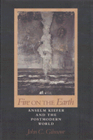

<body bgcolor="#FFFFFF" text="#000000" link="#0000FF" vlink="#CC0000" alink="#CC0000"><center><hr width="350" size="1" align="center" noshade>A philosophical case study of Kiefer's work<hr width="350" size="1" align="center" noshade><p><a href="https://cdcshoppingcart.uchicago.edu/Cart/ChicagoBook.aspx?ISBN=9780877226901&&PRESS=temple" target="_top">Buy this book!</a> | <a href="https://cdcshoppingcart.uchicago.edu/Cart/Cart.aspx?PRESS=temple" target="_top">View Cart</a> | <a href="https://cdcshoppingcart.uchicago.edu/Cart/Cart.aspx?PRESS=temple" target="_top">Check Out</a></p><p></p></center><!--none//--><h1>Fire on the Earth</h1>
<H2>Anselm Kiefer and the Postmodern World</H2>
<h3>John C. Gilmour</h3>
<P>cloth 0-87722-690-3 $49.95, Jun 90, <FONT COLOR=#990033>Out of Print</FONT>
<br>paper 0-87722-962-7 $30.95, Mar 92, <FONT COLOR=#990033>Out of Stock Unavailable</FONT>
<BR> 272 pp
32&nbsp;duotones 11&nbsp;color&nbsp;illustrations
</P><BLOCKQUOTE><I>"This is a careful, clearly written study of topics that are often discussed by others in obscure jargon. The work is obviously informed both by a deep, extensive knowledge of Kiefer's painting and by a comprehensive understanding of postmodern thought and culture. Gilmour easily moves back and forth between sensitive descriptions of the meaning, textures, and symbolic associations of the artworks and lucid discussions of theories of contemporary art and culture."</I>
<br>&#151<b>Gary Shapiro</b>, University of Kansas<I></I></BLOCKQUOTE>
<p>Born in 1945, the German painter Anselm Kiefer "represents the concerns and insecurities of postwar European intellectuals, confronted by a questionable past and a future so threatening that it tends to create despair." In this philosophical case study of Kiefer�s work, John C. Gilmour addresses a crisis that is common to twentieth-century art and aesthetic theory: the loss of confidence in the ideals and world view inherited from the Enlightenment. Modernism�s historical moment has passed, he claims, and Kiefer�s art&#151which was the subject of a recent national exhibition&#151reveals the contours of an emerging postmodern vision.
<p>Considering the writings of Jameson, Foucault, Baudrillard, Lyotard, and Nietzsche, among others, Gilmour shows how Kiefer�s use of literary, mythological, and other cultural texts parallels the intertextual approach common among postmodern theorists. At the same time, the artist�s cosmological questioning adds a dimension lacking among many of postmodernism�s leading proponents. The author interprets Kiefer�s art as a site where distinctions between modern and postmodern senses of representation, history, cosmology, and nature become thematic. He addresses individual paintings&#151the book includes forty-four illustrations&#151and gives the historical, biographical, art-critical, and philosophical setting for each piece.
<BR>&nbsp;<h2>Contents</h2><P>
<p>Illustrations
<br>Preface
<br>Acknowledgments
<br>Introduction
<p><b>Part I: Representation and Simulation in Postmodern Art</b>
<br>1. Windows, Mirrors, and Grids
<br>2. The Crisis of Modernity: Reality and Hyperreality
<br>3. Original Representation: Theatre of Cruelty Painting
<p><b>Part II: The Artist's Texts and Cultural Dissemination</b>
<br>4. The Death of the Subject and the Birth of the Text
<br>5. Narrative Knowledge and Cultural Memory
<br>6. Cosmological and Mythical Narratives
<p><b>Part III: Humanity in the Postmodern Moment</b>
<br>7. Technology and Historical Progress in the Postmodern Moment
<br>8. The Postmodern Habitat
<p>Notes
<br>Bibliography
<br>Index
</P><BR>&nbsp;<H2>About the Author(s)</H2>
<P><b>John C. Gilmour</b> is Professor of Philosophy and Director of the B.A. in Fine Arts Program at Alfred University.</P>
<BR><H2>Subject Categories</H2>
<p><A HREF="/tempress/philosophy.html" TARGET="_top">Philosophy and Ethics</a>
<BR><A HREF="/tempress/art.html" TARGET="_top">Art and Photography</a>
</p>
<BR><h2 class="inpageheading">In the series</H2>
<P><I><a href="http://www.temple.edu/tempress/arts_philo.html" onMouseOver="window.status='Click for other books in this series!'; return true;" onMouseOut="window.status=''; return true;" target="_top">The Arts and Their Philosophies</a></i>, edited by Joseph Margolis.
</p><p>The volumes in <i>The Arts and Their Philosophies</i>, edited by Joseph Margolis, include: overviews of such well-defined sub-disciplines as the philosophy of music, film, and literature; studies of important figures, schools, and movements; monographs on such topics as postmodernism, texts and interpretation, reference in fiction, and the methodology of art history; explorations of the intersection of the arts and other disciplines, such as feminism and interpretation, art and politics; and translations of major works.</p>
<p align="center"><a href="https://cdcshoppingcart.uchicago.edu/Cart/ChicagoBook.aspx?ISBN=9780877226901&&PRESS=temple" target="_top">Buy this book!</a> | <a href="https://cdcshoppingcart.uchicago.edu/Cart/Cart.aspx?PRESS=temple" target="_top">View Cart</a> | <a href="https://cdcshoppingcart.uchicago.edu/Cart/Cart.aspx?PRESS=temple" target="_top">Check Out</a></p><p><font face="Arial" size="1"><a href="copyright.html" onMouseOver="window.status='Web Copyright Policy';return true;" onMouseOut="window.status=''" title="Web Copyright Policy">&copy;</a> 2015 <a href="http://www.temple.edu" target="new" onMouseOver="window.status='Link to Temple University home page';return true;" onMouseOut="window.status=''" title="Link to Temple University home page">Temple University</a>. All Rights Reserved. http://www.temple.edu/tempress/titles/697_reg.html</font></p>